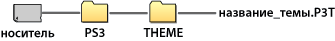

Настройки > Настройки темы
Настройки темы
Настройка параметров XMB™ в соответствии с требованиями пользователя, например, задание фона или шрифта текста на экране.
Тема
Служит для настройки элементов оформления, отображаемых на экране XMB™, таких как фон и значки. Тему можно настроить следующими способами.
Выбор предустановленной темы
Выбор темы, предустановленной в системе PS3™.
Загрузка темы в систему PS3™
Тема, которую вы загрузите, используя  (PlayStation®Store) или
(PlayStation®Store) или  (Веб-браузер), будет автоматически установлена в системе PS3™ после завершения загрузки.
(Веб-браузер), будет автоматически установлена в системе PS3™ после завершения загрузки.
Установка темы с диска с игрой или диска Blu-ray Disc с фильмом (BD-ROM)
Для установки и использования файла с темой с дискового носителя выберите значок  в меню
в меню  (Игра), затем выберите файл с темой, которую вы хотите установить. По окончании установки тема будет выбрана автоматически.
(Игра), затем выберите файл с темой, которую вы хотите установить. По окончании установки тема будет выбрана автоматически.
Создание или загрузка темы на ПК
Когда загрузка или создание темы производится с использованием ПК, создайте на носителе информации папку с именем [PS3] - [THEME] и сохраните тему в этой папке. Файлы темы должны сохраняться с расширением [.P3T].

Для установки темы на жесткий диск системы PS3™ подсоедините к системе носитель информации, содержащий файл с темой, и выберите  (Настройки) >
(Настройки) >  (Настройки темы) > [Тема] > [Установить].
(Настройки темы) > [Тема] > [Установить].
Подсказки
- Значок, не являющийся частью темы, будет заменен в файле темы другим значком или останется стандартным значком экрана XMB™.
- Если файл темы содержит несколько фоновых изображений, фон темы будет случайным образом меняться.
- Доступно программное обеспечение ПК, позволяющее создавать собственные файлы темы для использования в системе PS3™. (Требуется также приобрести программное обеспечение для создания графических элементов.) Подробную информацию можно найти на веб-сайт SCE для соответствующего региона.
- Для использования носителя информации в некоторых моделях системы PS3™ может потребоваться адаптер USB (не включенный в комплект поставки).
Удаление тем
Выберите тему, которую требуется удалить, нажмите кнопку  , затем выберите [Удалить].
, затем выберите [Удалить].
Цвет
Служит для установки фонового цвета для экрана XMB™.
| Исходный | Установка исходного цвета фона. |
|---|---|
| (образец цвета) | Установка выбранного цвета в качестве фонового. |
Фон
Установка используемого в теме фона или изображения, выбранного в качестве заставки в меню  (Фото), в качестве фона для экрана XMB™.
(Фото), в качестве фона для экрана XMB™.
| Яркость | Изменение яркости фона. |
|---|---|
| Исходный | Установка первоначальной темы. |
| Классическая | Будет установлена [Классическая] тема. |
| (имя темы) | Установка использования для темы фона, заданного в меню [Тема]. |
| Заставка | Назначение в качестве фона изображения, выбранного в качестве заставки в меню (Фото). |
Шрифт
Установка типа шрифта для использования на экране XMB™ или в сообщениях в меню  (Друзья). Когда в качестве языка системы назначен корейский или китайский (упрощенное или традиционное письмо), этот пункт не доступен для выбора.
(Друзья). Когда в качестве языка системы назначен корейский или китайский (упрощенное или традиционное письмо), этот пункт не доступен для выбора.
Подсказка
Перечень доступных для выбора шрифтов зависит от используемого языка системы.